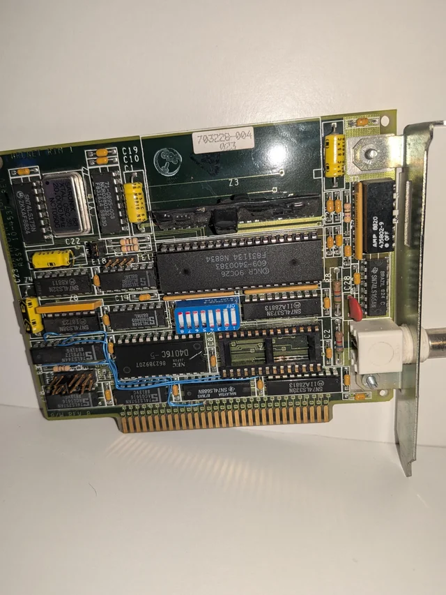
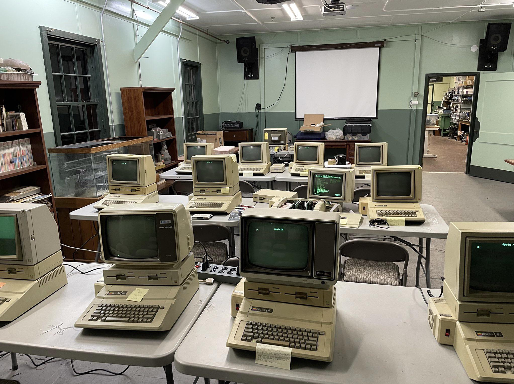
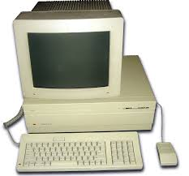
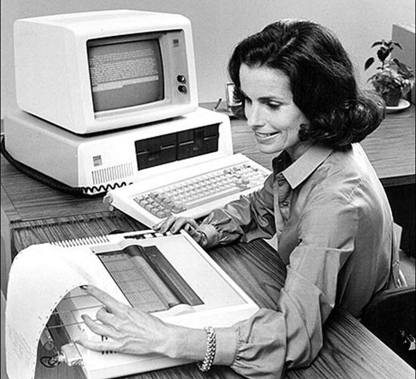
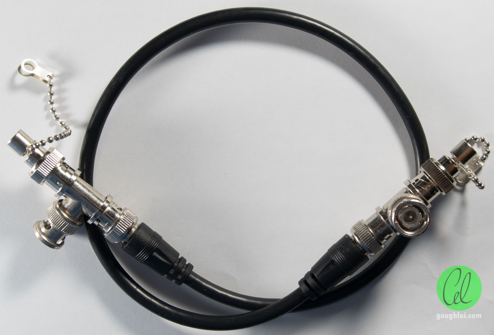
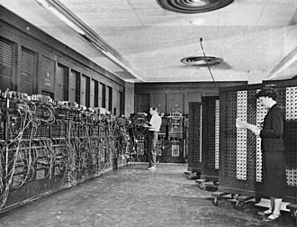
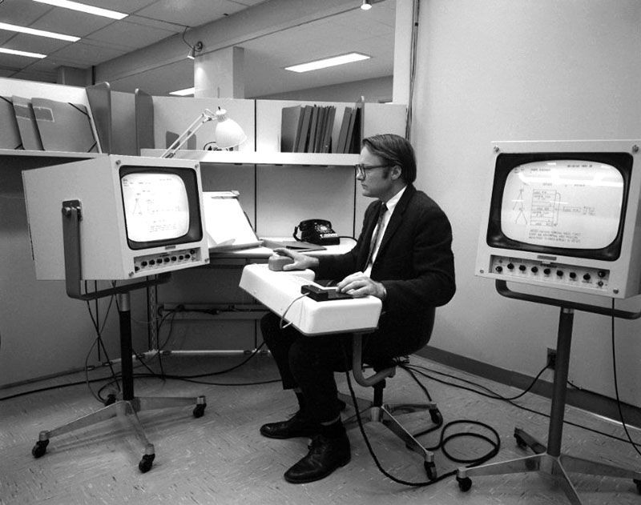

1986: Primeras Redes de Computadoras en Ecuador
Implementación de Redes ARCnet en el Contexto Internacional
Contexto tecnológico internacional: La tecnología ARCnet (Attached Resource Computer Network), desarrollada originalmente por Datapoint Corporation en 1977, alcanzó su máxima popularidad durante la segunda mitad de la década de 1980. Esta tecnología de red ofrecía una alternativa robusta y relativamente económica a otras soluciones de networking disponibles en el mercado, particularmente atractiva para entornos empresariales y académicos con presupuestos limitados.
En el contexto ecuatoriano, es históricamente plausible que algunas instituciones pioneras comenzaran a experimentar con implementaciones de redes ARCnet alrededor de 1986, siguiendo tendencias internacionales y respondiendo a la creciente necesidad de conectar múltiples estaciones de trabajo. Estas primeras redes generalmente tenían alcances limitados dentro de edificios o departamentos específicos, y requerían de personal especializado para su instalación y mantenimiento.
Características técnicas de ARCnet documentadas:
- Topología: Generalmente implementada en topología de estrella usando hubs pasivos o activos
- Velocidad: Operaba a 2.5 Mbps, velocidad considerable para aplicaciones empresariales de la época
- Medio de transmisión: Utilizaba cable coaxial RG-62 de 93 ohmios o cable par trenzado
- Protocolo de acceso: Empleaba un método de paso de testigo (token passing) que garantizaba acceso ordenado al medio
- Distancia máxima: Podía alcanzar hasta 600 metros entre estaciones, ampliable con repetidores
Desafíos de implementación en Ecuador:
La adopción de tecnologías de red como ARCnet enfrentó numerosos desafíos en el contexto ecuatoriano de finales de los 80. Estos incluían limitaciones de importación de equipos especializados, escasez de personal capacitado en networking, altos costos de los componentes, y la necesidad de adaptar soluciones diseñadas para mercados desarrollados a las condiciones locales de infraestructura y operación.

Análisis técnico contemporáneo de las capacidades y aplicaciones de la tecnología ARCnet en el contexto empresarial de mediados de los 80.
Expansión de la Infraestructura Computacional en Instituciones Educativas
Durante 1986, continuó el proceso de expansión de la infraestructura computacional en instituciones de educación superior ecuatorianas. Este crecimiento fue incremental y generalmente respondió a necesidades específicas de departamentos o facultades particulares, más que a una estrategia institucional integral. Las adquisiciones de equipos durante este período tendieron a diversificarse, incorporando no solo computadoras personales compatibles con IBM, sino también equipos de otras marcas y arquitecturas.
El proceso de toma de decisiones para estas adquisiciones involucró complejas evaluaciones técnicas y financieras. Los comités de compra debían balancear consideraciones de compatibilidad con equipos existentes, disponibilidad de soporte técnico local, costos de mantenimiento, y la evolución anticipada de las necesidades académicas y administrativas. Estas decisiones se tomaban en un contexto de restricciones presupuestarias significativas y devaluación monetaria, lo que añadía capas adicionales de complejidad al proceso de modernización tecnológica.

Fuente Bibliográfica: Una mirada a la historia de la educación en el Ecuador: Retos del siglo XXI (USFQ)
1987: Diversificación de Plataformas y Sistemas
Popularización del Apple Macintosh en Ambientes Académicos Internacionales
Revolución de la interfaz gráfica: 1987 marcó un año significativo en la popularización de las interfaces gráficas de usuario (GUI) en el mercado internacional de computación personal. El Apple Macintosh, particularmente los modelos SE y Macintosh II lanzados ese año, ofrecían capacidades gráficas avanzadas y una experiencia de usuario radicalmente diferente a los sistemas basados en línea de comandos predominantes hasta entonces.
En el contexto educativo internacional, el Macintosh comenzó a ganar popularidad en disciplinas como diseño gráfico, arquitectura, música y artes, donde sus capacidades gráficas y multimedia ofrecían ventajas significativas. Aunque la adopción en Ecuador fue más lenta y limitada por factores económicos, es históricamente plausible que algunas instituciones educativas pioneras comenzaran a evaluar o adquirir equipos Macintosh para aplicaciones especializadas durante este período.
Características técnicas del Macintosh SE (1987):
- Procesador: Motorola 68000 a 8 MHz, arquitectura de 16/32 bits
- Memoria: 1 MB ampliable a 4 MB, cantidad significativa para la época
- Almacenamiento: Disco duro interno de 20 MB opcional (revolucionario para equipos de escritorio)
- Interfaz: Sistema operativo System 4.1/4.2 con interfaz gráfica completa
- Monitor: Pantalla monocroma de 9 pulgadas integrada, resolución 512x342 píxeles
- Software destacado: MacPaint, MacDraw, Microsoft Word para Mac, PageMaker

Anuncio oficial del lanzamiento del Macintosh SE y Macintosh II, documentando las especificaciones técnicas y visiones de aplicación educativa.
Desarrollo de Sistemas de Gestión Académica en Universidades
El año 1987 probablemente vio avances significativos en el desarrollo e implementación de sistemas de gestión académica en instituciones de educación superior ecuatorianas. Estos sistemas, generalmente desarrollados internamente o mediante contratos con empresas locales de software, buscaban automatizar procesos administrativos clave como matrícula, control de calificaciones, generación de horarios y gestión de historiales académicos.
El desarrollo de estos sistemas enfrentó desafíos técnicos considerables, incluyendo la necesidad de adaptar modelos de datos complejos a las limitaciones de hardware y software disponibles, garantizar la integridad y seguridad de la información, y diseñar interfaces accesibles para usuarios con diferentes niveles de alfabetización digital. Estos proyectos también implicaron importantes procesos de cambio organizacional, requiriendo la capacitación de personal administrativo y la redefinición de procedimientos institucionales establecidos.
Evolución del software de gestión:
A nivel internacional, 1987 fue testigo del crecimiento del mercado de software de gestión empresarial y educativo. Sistemas basados en dBase y Clipper ganaron popularidad para desarrollos personalizados, mientras que paquetes integrados comenzaban a emerger como alternativas para instituciones con recursos limitados para desarrollo interno.

1988: Avances en Conectividad y Comunicaciones
Expansión de Redes Locales y Protocolos de Comunicación
Consolidación de estándares de networking: Para 1988, el panorama internacional de redes de computadoras mostraba una consolidación significativa alrededor de ciertos estándares y tecnologías. Ethernet, originalmente desarrollado por Xerox en los 70 y estandarizado por IEEE como 802.3, ganaba creciente aceptación en ambientes empresariales y académicos. Paralelamente, tecnologías como Token Ring de IBM mantenían presencia en ciertos nichos específicos, particularmente en grandes organizaciones con inversiones previas en infraestructura IBM.
En el contexto ecuatoriano, es plausible que instituciones con mayor capacidad de inversión comenzaran a implementar redes Ethernet basadas en cable coaxial (10BASE2) durante este período. Estas implementaciones generalmente comenzaban como proyectos piloto en departamentos específicos, expandiéndose gradualmente a medida que se demostraba su utilidad y se capacitaba personal técnico para su mantenimiento. La transición hacia estándares abiertos como Ethernet representó un paso importante hacia la interoperabilidad entre equipos de diferentes fabricantes.
Evolución de estándares de red (1988):
- Ethernet 10BASE2: También conocido como "Thin Ethernet" o "Cheapernet", utilizaba cable coaxial RG-58 y conectores BNC
- Velocidad: 10 Mbps, considerable mejora sobre tecnologías anteriores como ARCnet
- Topología: Bus lineal con terminadores en cada extremo, limitando la extensión máxima del segmento
- Limitaciones: Vulnerabilidad a fallos por desconexión de cualquier conexión en el bus
- Costo: Menor que Ethernet coaxial grueso (10BASE5), facilitando adopción en organizaciones con presupuestos limitados

Documentación técnica oficial de los estándares Ethernet ratificados por el Instituto de Ingenieros Eléctricos y Electrónicos.
Primeros Experimentos con Comunicación entre Instituciones
Hacia 1988, comenzaron a surgir iniciativas pioneras para establecer comunicación electrónica entre diferentes instituciones educativas y de investigación en Ecuador. Estos primeros experimentos generalmente utilizaban tecnología de módem y líneas telefónicas convencionales para establecer conexiones punto a punto entre computadoras ubicadas en diferentes ciudades o instituciones.
Las aplicaciones iniciales de estas conexiones interinstitucionales incluyeron la transferencia de archivos de datos de investigación, intercambio de información administrativa, y colaboración en proyectos académicos conjuntos. Estos experimentos enfrentaron numerosos desafíos técnicos, incluyendo incompatibilidades entre sistemas, limitaciones de velocidad (generalmente 1200-2400 baudios), costos de comunicación telefónica, y la necesidad de coordinación manual para establecer las conexiones.
Contexto internacional de interconexión:
A nivel mundial, 1988 fue un año crucial para el desarrollo de lo que eventualmente se convertiría en Internet. La National Science Foundation estableció NSFNET, red académica que eventualmente reemplazaría a ARPANET como columna vertebral de Internet. Aunque estas desarrollos internacionales tendrían impacto limitado inmediato en Ecuador, establecieron paradigmas técnicos y organizacionales que influenciarían posteriormente iniciativas nacionales de interconexión.

Análisis de la evolución de los medios y tecnologías de comunicación en el país.
1989: Consolidación y Preparación para los 90s
Evolución del Hardware y Software al Final de la Década
Transición tecnológica significativa: El año 1989 representó un punto de transición importante en la evolución de la tecnología de computación personal. Arquitecturas establecidas como el bus ISA (Industry Standard Architecture) comenzaban a mostrar sus limitaciones frente a necesidades crecientes de rendimiento, mientras que nuevas propuestas como el bus MCA (Micro Channel Architecture) de IBM y EISA (Extended Industry Standard Architecture) competían por definir el futuro de la expansión de hardware.
En el ámbito del software, 1989 vio importantes desarrollos que marcarían la década siguiente. Microsoft lanzó Office 1.0, integrando por primera vez Word, Excel y PowerPoint en un solo paquete. En el mundo del software libre, el proyecto GNU continuaba su desarrollo, estableciendo bases para lo que eventualmente se convertiría en Linux. Estas evoluciones internacionales influenciaron gradualmente el panorama tecnológico ecuatoriano, aunque generalmente con retrasos significativos debido a limitaciones de importación y adopción.
Tendencias tecnológicas internacionales (1989):
- Procesadores: Intel 80386 a 25 MHz comenzaba a ser estándar en equipos de gama alta
- Memoria: 1-4 MB de RAM se volvían comunes en equipos empresariales
- Almacenamiento: Discos duros de 40-100 MB ganaban adopción frente a solo disquetes
- Interfaces gráficas: Windows 2.1x y OS/2 Presentation Manager competían por mercado
- Redes: Tarjetas Ethernet de 10 Mbps comenzaban a reemplazar soluciones más lentas

Cronología detallada de los principales desarrollos tecnológicos a nivel mundial durante 1989, proporcionando contexto internacional relevante.
Preparación para la Década de 1990 y la Revolución de Internet
A medida que la década de 1980 llegaba a su fin, instituciones educativas y de investigación en Ecuador comenzaban a prepararse, consciente o inconscientemente, para los profundos cambios tecnológicos que traería la década de 1990. La creciente importancia internacional de Internet, demostrada por hitos como la propuesta original de la World Wide Web por Tim Berners-Lee en marzo de 1989, sugería una transformación radical en las comunicaciones y el acceso a la información.
En el contexto ecuatoriano, esta preparación tomó diversas formas: algunas instituciones invirtieron en capacitación de personal en nuevas tecnologías de red, otras participaron en discusiones regionales sobre cooperación tecnológica, y muchas comenzaron a desarrollar estrategias institucionales para la modernización tecnológica. Estos procesos de preparación fueron desiguales entre instituciones y enfrentaron los desafíos persistentes de limitaciones presupuestarias, dependencia de importaciones, y la necesidad de desarrollar capacidades técnicas locales.
Legado de los años 80:
La década de 1980 dejó un legado mixto para la tecnología en la educación superior ecuatoriana. Por un lado, estableció bases importantes de infraestructura, capacitación y experiencia práctica. Por otro, reveló desafíos estructurales significativos relacionados con sostenibilidad financiera, dependencia tecnológica externa, y la necesidad de desarrollar marcos de política institucional más robustos para la gestión de tecnología.
Dato Curioso: 1989
Si bien el Internet como servicio comercial no existía en el país, 1989 fue el año en que se lanzó la Lista 'Ecuador'. Fue creada por el académico Iván Maldonado (quien en ese entonces estaba en la Universidad Estatal de Carolina del Norte).

Investigación sobre los orígenes de la red de la academia y primeros esfuerzos de conexión del Ecuador con el exterior.
Metodología de Investigación para 1986-1989
Sistema de Verificación de Imágenes y Contenido Multimedia
Verificación de imágenes históricas
Proceso de validación documental
Para esta línea de tiempo histórica, se implementó un sistema riguroso de verificación de imágenes y contenido multimedia que incluye los siguientes criterios:
- Atribución documentada: Todas las imágenes incluyen enlace directo a su fuente original en repositorios públicos verificables.
- Relevancia histórica: Las imágenes seleccionadas representan tecnologías y contextos históricamente apropiados para el período 1986-1989.
- Precisión contextual: Las descripciones de imágenes incluyen información verificable sobre fechas, especificaciones técnicas y contexto histórico.
- Licencias de uso: Todas las imágenes utilizadas están bajo licencias que permiten su uso para fines educativos y de investigación histórica.
- Marcaje diferenciado: Las imágenes verificadas incluyen fuentes documentadas, mientras que las representaciones conceptuales están claramente identificadas como tales.
Limitaciones y Consideraciones Historiográficas Específicas
La investigación histórica del período 1986-1989 presenta desafíos particulares relacionados con la transición acelerada de tecnologías y la naturaleza cada vez más compleja de los sistemas implementados. Entre las consideraciones metodológicas específicas para este período se encuentran:
- Fragilidad de fuentes digitales tempranas: Muchos documentos y sistemas de este período utilizaron formatos y soportes que presentan desafíos significativos para su preservación y acceso actual.
- Diversificación tecnológica: La creciente variedad de platforms, estándares y soluciones implementadas dificulta la reconstrucción de panoramas tecnológicos institucionales completos.
- Transición documental: Este período marca una transición entre documentación predominantemente física y el inicio de documentación digital, creando vacíos y discontinuidades en los registros históricos.
- Convergencia de disciplinas: La tecnología comienza a integrarse más profundamente con procesos académicos y administrativos, requiriendo análisis interdisciplinarios para su comprensión histórica.
- Globalización tecnológica acelerada: Los desarrollos internacionales tienen impacto más rápido en Ecuador, pero con adaptaciones locales que requieren análisis contextual específico.
Perspectiva de historia de la tecnología:
El estudio histórico de este período debe considerar no solo los aspectos técnicos de la implementación tecnológica, sino también los procesos sociales, organizacionales y económicos que determinaron qué tecnologías se adoptaron, cómo se implementaron, y qué impactos tuvieron en las instituciones y prácticas educativas.
Transición hacia la Revolución de Internet (1990-1995)
El período 1986-1989 sentó bases tecnológicas, organizacionales y de capacitación que permitirían a instituciones ecuatorianas participar, aunque de manera limitada y desigual, en la revolución de Internet que caracterizaría la primera mitad de la década de 1990. La experiencia acumulada en redes locales, sistemas de gestión, y colaboración interinstitucional proporcionó un capital humano y organizacional que resultaría crucial para la adopción de tecnologías de red más avanzadas.
La próxima fase de esta investigación histórica cubrirá el período 1990-1995, caracterizado por la llegada de Internet a Ecuador, la creación de las primeras redes académicas nacionales, y los profundos cambios en prácticas educativas y de investigación resultantes del acceso a recursos de información global.
Continuación documentada: Período 1990-1995 - La llegada de Internet a Ecuador y su impacto transformador en la educación superior nacional, documentado mediante fuentes públicas verificables y análisis histórico contextual.